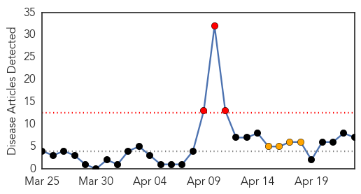
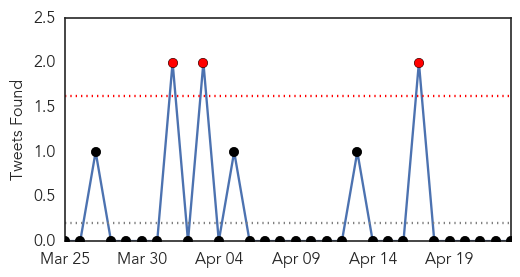
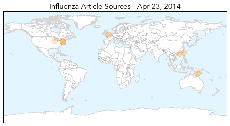
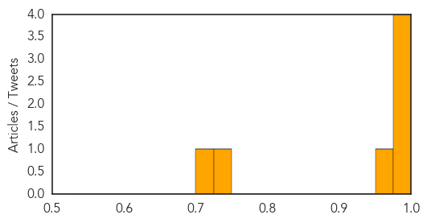

Toggle navigation
Early Warning
Daily Alerts
Influenza
Apr 23, 2014
Compare to:
-
Dengue Fever
Hemmorhagic Fever
Mold/Fungal Infection
Meningitis
Pertussis / Whooping Cough
Middle East Respiratory Syndrome
Cholera
Hepatitis
Chikungunya
Yellow Fever
Bubonic Plague
West Nile Virus
Swine Flu
Ebola
Measles
Unknown
Mumps
30 Day Trends
Web: 3
alerts
, 4
warnings
Twitter: 3
alerts
, 0
warnings
Top Articles:
0.999
The flu is back. (It never really goes away.)
0.999
Second wave of flu blows in with spring; Northeast states hardest hit by influenza B
0.995
MLHU confirms five influenza-related deaths in the past week
0.985
CHP closely monitors human case of avian influenza A(H7N9) in Taiwan
0.973
Early surge in flu cases points to horror winter
0.734
Avian Flu Scan for Apr 23, 2014
0.710
Harvard Medical School Researchers Awarded Twitter Data Grant
Top Tweets:
No tweets found for Apr 23, 2014
Web/News Articles

Tweets

Article Locations

Article Confidences
